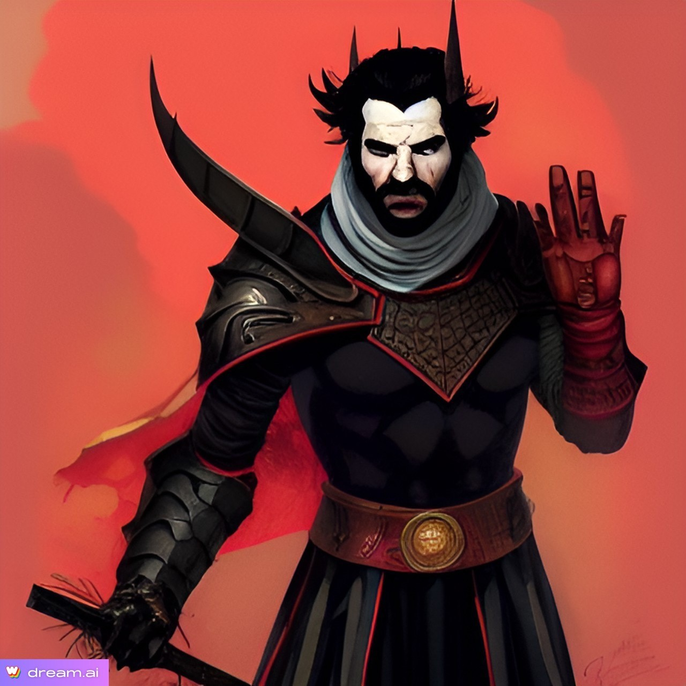

Meet the Characters
Thomasina Riverhopper

Character Biography
Thomasina grew up in Icewind Dale, then went pirating with her brothers. When they wouldn't promote her to have her own ship, she when looking for fortune and adventure on her own. Wanted in neverwinter, she joined the BES to travel icognito.
Thomasina's Stats
Kath’Dal
Character Biography
Born in the shadow of the Sunset Mountains, to a human woman who was a servant of a "Wearer of the Purple", a high-ranking member of the Cult of the Dragon. It was a hard life, the son of a servant, and Kath'dal's infernal lineage created even more difficulties. His mother seemed to care nothing for his well-being and it was suspected that he was a child of a "forced encounter." To make matters worse, he was constantly ridiculed and called "dirty infernal." The cult members would routinely throw buckets of water on him to "wash away the filth."
After 11 years of seemingly endless torment, Kath'dal met an unlikely friend in the form of Elenia, the daughter of the Dragonclaw. For 3 years their secret relationship grew from friendliness to potential romance. That is when a chance visit by a Keeper of the Secret Horde uncovered their relationship. In a fit of rage at the impropriety, the Keeper unleashed a group of skeletons on the Dragonclaw and his cell. The skeletons massacred the lot of the cell, but Kath'dal attempted to escape with Elenia by diving into the Chianthor river together. However, the river proved too swift, and Kath'dal found himself and Elenia swept away. Kath'dal awoke to find Elenia lifeless and drowned, but standing before him was... his father.
His father, a High Devil, offered him a chance for revenge on the Cult of the Dragon in exchange for his servitude. Kath'dal was promised power beyond comprehension in exchange for sending the cultist's souls to the Nine Hells for torment. Coupled with the magics he witnessed at the hands of the cultists, the thirst for revenge was too much to resist. So Kath'dal pledged his servitude to his father as patron and received a Warlock's power. The one stipulation his father put on him, in order to ensure his obedience, was the inability to lie. If Kath'dal were to speak an untruth, he would be engulfed in infernal fire causing debilitating torment. Kath'dal is determined to use his wit and charm to foil his enemies and avoids statements that are clear in their meaning.
Kath’Dal's Stats
Grim

Character Biography
I never really made a backstory. It was just Grim and his brother living in the slums of a large city and started doing gladiator stuff to earn enough money to eat.
Grim's Stats
Doyle Hawke
Character Biography
Doyle was part of the city watch in waterdeep until a scandal got him kicked off the force. He then was recruited in the Harpers. His first mission was to help a senior member investigate some unusual happenings around Greenest.
Doyle's Stats